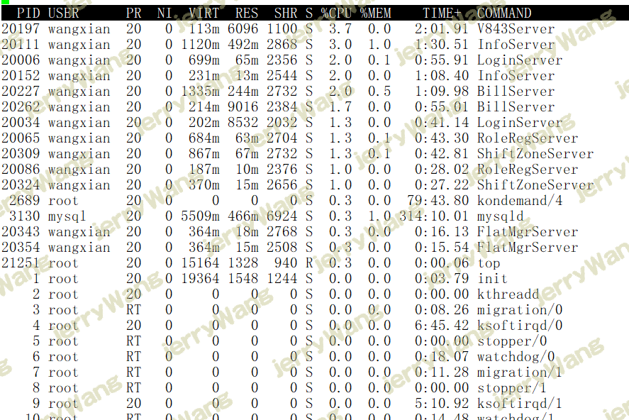

linux 查看当前系统的负载情况
uptime
linux uptime命令主要用于获取主机运行时间和查询linux系统负载等信息。
eg:
12:55:56 up 227 days, 16:25, 1 user, load average: 1.25, 1.62, 2.04
显示内容说明：
12:55:56 //系统当前时间
up 227 days, 16:25 //主机已运行时间,时间越大，说明你的机器越稳定。
1user //用户连接数，是总连接数而不是用户数
load average // 系统平均负载，统计最近1，5，15分钟的系统平均负载
那么什么是系统平均负载呢？
系统平均负载是指在特定时间间隔内运行队列中的平均进程数。
如果每个CPU内核的当前活动进程数不大于3的话，那么系统的性能是良好的。
如果每个CPU内核的任务数大于5，那么这台机器的性能有严重问题。
如果你的linux主机是1个双核CPU的话，当Load Average 为6的时候说明机器已经被充分使用了。
1可以被认为是最优的负载值。负载是会随着系统不同改变得。
单CPU系统1-3和SMP系统6-10都是可能接受的。
cat /proc/loadavg
1 | [root@37wan ~]# cat /proc/loadavg |
1.72 1.89 2.02 表示最近1分钟,5分钟,15分钟 系统的平均负载; 系统负载越高,代表CPU越繁忙;
1/535 1代表此时运行队列中的进程个数;535 代表系统中进程的总数
20618 代表到此为止创建的最后一个进程的ID.
w
1 | [root@37wan ~]# w |
USER:用户名
TTY:登录后系统分配的终端号
FROM: 远程主机名(即从哪儿登录来的)
LOGIN@:何时登录
IDLE:空闲了多长时间，表示用户闲置的时间。
JCPU:和该终端（tty）连接的所有进程占用的时间，这个时间里并不包括过去的后台作业时间，但却包括当前正在运行的后台作业所
占用的时间
PCPU:指当前进程（即在WHAT项中显示的进程）所占用的时间
WHAT:当前正在运行进程的命令行
tload
# tload
2.12, 2.03, 2.05
平均负载: 2.12, 2.03, 2.05 表示最近1分钟,5分钟,15分钟的系统平均负载.
top
1 | top - 13:11:33 up 227 days, 16:52, 1 user, load average: 2.15, 2.06, 2.06 |
系统运行时间和平均负载：
1 | top - 13:11:33 up 227 days, 16:52, 1 user, load average: 2.15, 2.06, 2.06 |
top命令的顶部显示与uptime命令相似的输出
这些字段显示：
- 当前时间
- 系统已运行的时间
- 当前登录用户的数量
- 相应最近5、10和15分钟内的平均负载。
可以使用’l’命令切换uptime的显示。
13:11:33 — 当前系统时间
227 days, 16:52, — 系统已经运行了的时间（在这期间没有重启过）
1 users — 当前有2个用户登录系统
load average: 2.15, 2.06, 2.06 — load average后面的三个数分别是5分钟、10分钟、15分钟的负载情况。
load average数据是每隔5秒钟检查一次活跃的进程数，然后按特定算法计算出的数值。如果这个数除以逻辑CPU的数量，结果高于5的时候就表明系统在超负荷运转了。
任务:
1 | Tasks: 230 total, 2 running, 228 sleeping, 0 stopped, 0 zombie |
Tasks — 任务(进程)：进程总数:230 正在运行进程数:2 睡眠进程数:228 停止的进程数:0 僵尸进程数:0
第二行显示的是任务或者进程的总结。进程可以处于不同的状态。这里显示了全部进程的数量。除此之外，还有正在运行、睡眠、停止、僵尸进程的数量（僵尸是一种进程的状态）。这些进程概括信息可以用’t’切换显示
CPU 状态:
1 | Cpu(s): 0.7%us, 1.3%sy, 0.0%ni, 97.9%id, 0.0%wa, 0.0%hi, 0.0%si, 0.0%st |
这里显示不同模式下所占cpu时间百分比，这些不同的cpu时间表示：
- us, user： 运行(未调整优先级的) 用户进程的CPU时间
- sy，system: 运行内核进程的CPU时间
- ni，niced：运行已调整优先级的用户进程的CPU时间
- wa，IO wait: 用于等待IO完成的CPU时间
- hi：处理硬件中断的CPU时间
- si: 处理软件中断的CPU时间
- st：这个虚拟机被hypervisor偷去的CPU时间（译注：如果当前处于一个hypervisor下的vm，实际上hypervisor也是要消耗一部分CPU处理时间的）。
可以使用’t’命令切换显示。
0.7% us — 用户空间占用CPU的百分比。
1.3% sy — 内核空间占用CPU的百分比。
0.0% ni — 改变过优先级的进程占用CPU的百分比
97.9% id — 空闲CPU百分比
0.0% wa — IO等待占用CPU的百分比
0.0% hi — 硬中断（Hardware IRQ）占用CPU的百分比
0.0% si — 软中断（Software Interrupts）占用CPU的百分比
在这里CPU的使用比率和windows概念不同，如果你不理解用户空间和内核空间，需要充充电了。
内存使用:
1 | Mem: 49349228k total, 44294036k used, 5055192k free, 387384k buffers |
接下来两行显示内存使用率，有点像’free’命令。第一行是物理内存使用，第二行是虚拟内存使用(交换空间)。
物理内存显示如下:全部可用内存、已使用内存、空闲内存、缓冲内存。相似地：交换部分显示的是：全部、已使用、空闲和缓冲交换空间。
内存显示可以用’m’命令切换。
49349228k total — 物理内存总量
44294036k used — 使用中的内存总量
5055192k free — 空闲内存总量
387384k buffers — 缓存的内存量
swap交换分区
33572860k total — 交换区总量
2560k used — 使用的交换区总量
33570300k free — 空闲交换区总量
40473596k cached — 缓冲的交换区总量
这里要说明的是不能用windows的内存概念理解这些数据，如果按windows的方式此台服务器“危矣”：8G的内存总量只剩下530M的可用内存。Linux的内存管理有其特殊性，复杂点需要一本书来说明，这里只是简单说点和我们传统概念（windows）的不同。
第四行中使用中的内存总量（used）指的是现在系统内核控制的内存数，空闲内存总量（free）是内核还未纳入其管控范围的数量。纳入内核管理的内存不见得都在使用中，还包括过去使用过的现在可以被重复利用的内存，内核并不把这些可被重新使用的内存交还到free中去，因此在linux上free内存会越来越少，但不用为此担心。
如果出于习惯去计算可用内存数，这里有个近似的计算公式：第四行的free + 第四行的buffers + 第五行的cached，按这个公式此台服务器的可用内存：
5055192k+387384k+40473596k= 45916172K= 44840MB + 43GB。
对于内存监控，在top里我们要时刻监控第五行swap交换分区的used，如果这个数值在不断的变化，说明内核在不断进行内存和swap的数据交换，这是真正的内存不够用了。
各进程（任务）的状态监控:

PID：进程ID，进程的唯一标识符
USER：进程所有者的实际用户名。
PR：进程的调度优先级。这个字段的一些值是’rt’。这意味这这些进程运行在实时态。
NI：进程的nice值（优先级）。越小的值意味着越高的优先级。负值表示高优先级，正值表示低优先级
VIRT：进程使用的虚拟内存。进程使用的虚拟内存总量，单位kb。VIRT=SWAP+RES
RES：驻留内存大小。驻留内存是任务使用的非交换物理内存大小。进程使用的、未被换出的物理内存大小，单位kb。RES=CODE+DATA
SHR：SHR是进程使用的共享内存。共享内存大小，单位kb
S：这个是进程的状态。它有以下不同的值:
- D - 不可中断的睡眠态。
- R – 运行态
- S – 睡眠态
- T – 被跟踪或已停止
- Z – 僵尸态
%CPU：自从上一次更新时到现在任务所使用的CPU时间百分比。
%MEM：进程使用的可用物理内存百分比。
TIME+：任务启动后到现在所使用的全部CPU时间，精确到百分之一秒。
COMMAND：运行进程所使用的命令。进程名称（命令名/命令行）
还有许多在默认情况下不会显示的输出，它们可以显示进程的页错误、有效组和组ID和其他更多的信息。
top 的内部命令
top 运行中可以通过 top 的内部命令对进程的显示方式进行控制。内部命令如下：
s – 改变画面更新频率
l – 关闭或开启第一部分第一行 top 信息的表示
t – 关闭或开启第一部分第二行 Tasks 和第三行 Cpus 信息的表示
m – 关闭或开启第一部分第四行 Mem 和 第五行 Swap 信息的表示
N – 以 PID 的大小的顺序排列表示进程列表
P – 以 CPU 占用率大小的顺序排列进程列表
M – 以内存占用率大小的顺序排列进程列表
h – 显示帮助
n – 设置在进程列表所显示进程的数量
q – 退出 top
s – 改变画面更新周期
 微信
微信 支付宝
支付宝